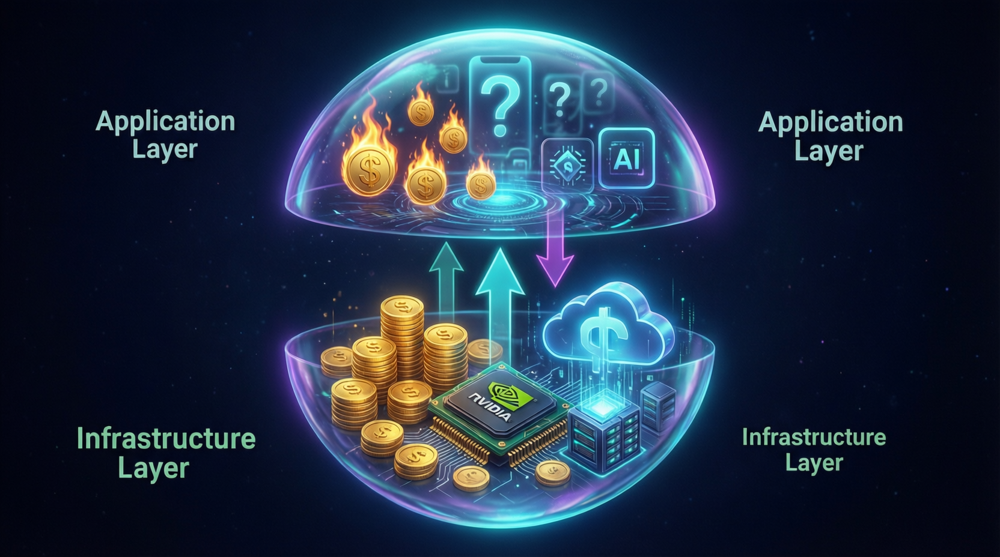

TypeScript大神Matt Pocock開源實戰方法論，以「Skills for real engineers」重新定義人機協作新正規化，對抗AI時代技術債務危機

AI 經濟存在兩個相互堆疊的泡沫。基礎設施層瘋狂賺錢，應用層瘋狂燒錢。這個結構性差異決定了誰能在調整期中存活下來。
NVIDIA 2026 財年收入高達 2160 億美元，淨利潤 1200 億美元——資料中心部門單季創造 1940 億美元。所有人看見這個數字都說同一句話：這不是 2000 年。營收是真的，基礎設施是真的，泡沫下面有實質。他們對了一半。問題是實質在錯誤的層。
Google Cloud 2026 年第一季度營收 200 億美元，年增長 63%。Microsoft Azure 增長 39%，AWS 維持最大雲端供應商地位。Microsoft 單年淨利潤 1020 億美元。NVIDIA 以約 30 倍本益比交易。NASDAQ 在網路泡沫高峰期曾以 200 倍本益比交易，Cisco 甚至超過 400 倍。
Fed主席鮑威爾在 2025 年底明確表示：與網路泡沫公司不同，這些企業真的有盈利。所言極是。
OpenAI 2026 年初 ARR 達到 250 億美元。每週 9 億用戶，5000 萬訂閱用戶。但今年預計虧損 140 億美元，計劃 2030 年達到損益平衡，並承諾到本世紀末投資約 6000 億美元於計算資源。
Anthropic 在 2026 年 4 月 ARR 突破 300 億美元，15 個月內從 10 億增長 30 倍。但最快也要到 2027 年才能實現正向自由現金流，而且這個預測建立在從未在此規模上維持過的增長率。
傳統軟件的邊際成本趨近於零：建造一次，服務一百萬用戶。AI 推論的成本呈線性增長。每增加 10,000 名用戶，成本與上一個 10,000 用戶相同。每次查詢都在燃燒計算資源。沒有收益增長天然超過成本增長的臨界點，因為服務下一個客戶與服務上一個客戶成本相同。這打破了 SaaS 的基本假設——規模創造利潤。
兩年來，AI 公司低於成本銷售 token 以建立市場佔有率。雲端玩法：讓用戶依賴，然後在切換成本太高時漲價。那個階段結束了。根據支出管理公司 Tropic，過去一年 AI 軟件費用增加了 20-37%。Anthropic 將每位開發者的 token 成本從 6 美元翻倍至 13 美元。OpenAI 預計損失 3500 萬美元。
AI 經濟是兩個泡沫疊在一起。基礎設施層負責印錢，應用層負責燒錢。網路泡沫只有一層。這個結構差異決定了什麼能在調整中存活下來。基礎設施層今天有利可圖。當超大規模雲端供應商用經營現金流資助大部分支出。當我說「大部分」，指的是 2024 年和 2025 年初的情況。每個季度這個情況都在減少。2025 年，雲端供應商發行了 1210 億美元的債券，是五年平均的四倍多。Oracle 的信用違約交換擴大到 2009 年以來未見的水平。Amazon的自由現金流從 380 億美元暴跌至 110 億美元。基礎設施層正在從現金融資轉向債務融資。債務正是將網路泡沫從繁榮變成蕭條的原因。不是應用失敗，而是基礎設施成本超過基礎設施利潤。
NVIDIA、AWS、Azure、Google Cloud壟斷市場，營收真實、利潤驚人，是當前 AI 經濟的支柱。
OpenAI、Anthropic 等AI公司營收增長快，但虧損更深，距離損益平衡仍遙遙無期。
邊際成本線性增長，沒有傳統軟件的規模經濟優勢，打破SaaS基本假設。
低於成本的定價階段結束，未來20-37%的漲幅將轉嫁給客戶。
| 維度 | 基礎設施層 | 應用層 | 差異 |
|---|---|---|---|
| 代表企業 | NVIDIA, AWS, Azure, GCP | OpenAI, Anthropic | 基礎設施壟斷 |
| 2026 營收 | $216B (NVIDIA) | $25B (OpenAI) | 8.6x 差距 |
| 淨利潤 | $120B (NVIDIA) | -$14B (預虧) | 完全相反 |
| 邊際成本 | 下降 (晶片規模) | 線性增長 (推論) | 根本差異 |
| 本益比 | ~30x | N/A (虧損) | 估值迥異 |
| 存活能力 | 強 (現金流) | 弱 (靠融資) | 結構性風險 |
「AI 經濟是兩個泡沫疊在一起。基礎設施層印錢，應用層燒錢。這個結構差異決定了什麼能在調整中存活。」
— Denis Stetskov, Tech Trenches隨著開源大型語言模型能力持續提升，AI程式設計的技術門檻預期將進一步降低。然而專家分析指出，未來開發者的核心競爭力將從「撰寫程式碼速度」轉向「駕馭AI管理複雜系統的能力」。頂尖工程師的定位正逐漸轉型為「AI架構師」——既精通底層技術，又擅長設計人機協作流程，知道何時放權、何時約束，在效率提升與品質管控間取得平衡。
數據顯示，Pocock方法論的廣泛傳播，標誌著開發社群從「AI取代工程師」的焦慮，轉向「AI增強工程師」的務實探索。這種轉變不僅關乎技術選擇，更涉及軟體工程文化的深層重塑——在AI時代，思考深度將取代編碼速度，成為區分優秀與平庸開發者的關鍵指標。